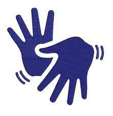

-
Símbolo Internacional de Acesso
Indica acessibilidade em edificações e espaços urbanos com rampas, elevadores e outros recursos para mobilidade reduzida.
-
Cão-Guia
Permite que pessoas com deficiência visual e seus cães-guia acessem o local.
-
Símbolo do Braille
Sinaliza materiais com a escrita tátil que permite a leitura para pessoas com deficiência visual.
-

Símbolo da Lupa
Indica a disponibilidade de recursos de ampliação de texto, facilitando a leitura para pessoas com baixa visão.
-

Deficiência Auditiva
Usado para indicar locais com recursos para pessoas com deficiência auditiva, como sistemas de audição assistida.
-

LIBRAS
Indica que serviços ou informações estão disponíveis na Língua Brasileira de Sinais, facilitando a comunicação para a comunidade surda.
-
Legenda Aberta (Opend Caption)
Sinaliza que as legendas estão permanentemente na tela e não podem ser desativadas.
-

Legenda Oculta (Closed Caption)
Refere-se a legendas que podem ser ativadas e desativadas pelo usuário, comuns em programas de TV e vídeos online.
-
Telebobina (T-coil)
Indica a presença de um sistema de audição assistida que transmite som diretamente para aparelhos auditivos ou implantes cocleares.
-
Transtorno do Espectro Autista (TEA)
Sinaliza que o local oferece um ambiente mais inclusivo e com recursos para pessoas com TEA.
-
Pessoa com Nanismo
Representa a necessidade de adaptação de ambientes para pessoas com nanismo, garantindo autonomia e acesso aos espaços.
-
Pessoa Ostomizada
Indica a presença de banheiros e espaços adaptados para pessoas que vivem com uma ostomia.